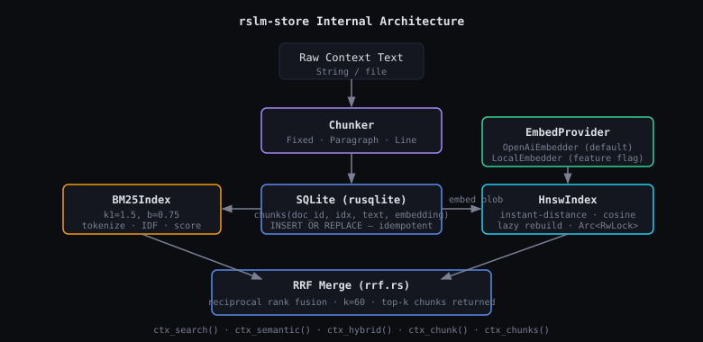

Architecture
How rslm implements the RLM inference pattern.
Core Data Flow

Rlm::run(query, ctx)is called. Context stored in Rhai scope asctx.- System prompt explains the registered Rhai API. Model generates a script.
- Engine executes the script in a fresh
Scope::new()— no state persists between cells. - If the script calls
rlm_call(q, sub_ctx): a childRlm(depth+1) is constructed with an isolated engine, run to completion viaspawn_blocking, and its answer returned as the Rhai call's return value. - If the script calls
final_answer(s): loop exits, answer bubbles up. - Otherwise: script output appended to notebook as
Cell { script, output }. Loop continues; next model call gets full message history. - Depth limit (default: 5) and iteration limit (default: 20) hard-stop infinite recursion.
- Script errors are fed back to the model for self-correction (up to 3 retries per cell).
Crate Responsibilities

rslm-core
Owns the RLM loop (rlm.rs), Rhai engine setup (env.rs),
and protocol types (protocol.rs). The Rlm struct holds the
provider, depth, limits, and optional ChunkStore. Does not know about CLI.
rslm-providers
LlmProvider trait with async fn complete(messages) -> Result<String>.
Two impls: OpenAiProvider (via async-openai) and
AnthropicProvider (via reqwest). Selected at runtime via
RSLM_PROVIDER env var.
rslm-store New
Chunking, BM25 keyword search, HNSW vector search, SQLite persistence, embedding
provider abstraction, and RRF fusion. Wired into build_engine() optionally —
zero behavior change when absent.
rslm-cli
Binary with query, interactive, and ingest
subcommands. Builds provider + optional store, calls Rlm::new(). No business
logic — pure wiring.
rslm-store Internal Structure

Hybrid Search Pipeline

Rhai API
| Function | Signature | Description | Requires store |
|---|---|---|---|
ctx_len | () -> int | Total context byte length | No |
ctx_slice | (start, end) -> String | Byte-range slice of context | No |
ctx_grep | (pattern) -> String | Regex search, matching lines joined | No |
rlm_call | (query, ctx) -> String | Spawn child RLM; blocking | No |
print_cell | (msg) | Log to cell output | No |
final_answer | (answer) | Signal loop exit | No |
doc_id | () -> String | Active document ID | Yes |
ctx_chunks | (doc_id) -> int | Chunk count for document | Yes |
ctx_chunk | (doc_id, i) -> String | Get chunk by index | Yes |
ctx_search | (doc_id, query, k) -> String | BM25 top-k chunks | Yes |
ctx_semantic | (doc_id, query, k) -> String | Embedding search top-k | Yes |
ctx_hybrid | (doc_id, query, k) -> String | RRF hybrid top-k | Yes |
Error Model
| Error | Cause | Behavior |
|---|---|---|
MaxDepthExceeded | Recursion depth > max_depth | Hard error, propagates up |
MaxIterationsExceeded | Loop ran > max_iterations without final_answer | Hard error |
ScriptError | Rhai compile/runtime failure | Fed back to model, up to 3 retries, then hard error |
ProviderError | LLM API failure | Non-retryable, propagates immediately |